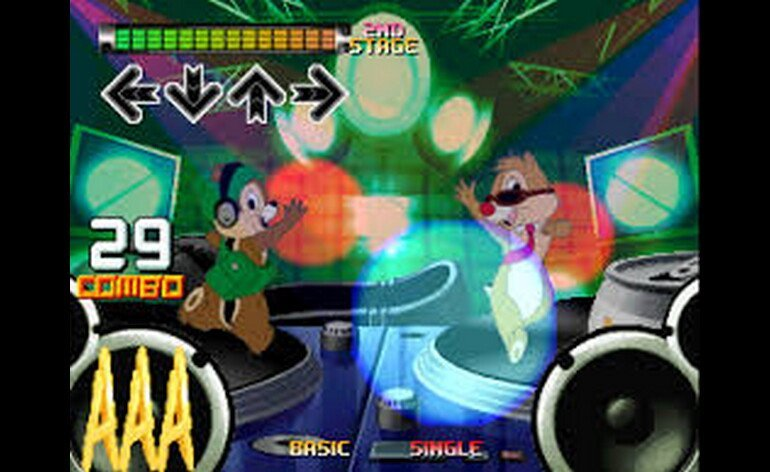

Descubre un mundo vibrante y vasto en la segunda entrada del remake de Final Fantasy VII, una reconstrucción ambiciosa del RPG de 1997 que redefinió un género y que ahora se contará de nuevo en tres juegos independientes. Los héroes icónicos Cloud, Barret, Tifa, Aeris y Red XIII han escapado de la distópica ciudad de Midgar y ahora están en busca de Sefirot, el vengativo espadachín del pasado de Cloud a quien se creía muerto.
Border BOTS VR es un juego de simulación y acertijos que transcurre en una versión futura de la Tierra donde la IA tiene el control. Serás un agente de frontera humano a cargo de controlar el paso de la IA. Deberás controlar a una gran variedad de robots e interactuar con ellos mientras tratan de pasar los controles de seguridad. Puede que algunas de sus credenciales no sean adecuadas. Tú decides si poner el sello de aprobación o no.